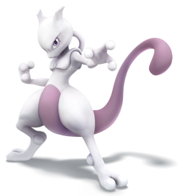

-
Pikachu
HP 300

Descrição
tipo de Pokémon elétrico: os bolsos em suas bochechas, identificado por discos vermelhos que decoram, são capazes de gerar choques elétricos de intensidade variável, chegando até o nível de poder de um raio. Eles também o usam para se defender.
-
Charizard
HP 1500

Descrição
Pokémon do tipo Fogo e Voador. Ele é a forma evoluída de Charmeleon quando chega no nível 36. Ele tambem é a forma final de Charmander.
-
Meowtwo
HP 3000
Descrição
criatura com uma postura humanóide, mas tem algumas características felinas. O corpo de Mewtwo é cinzento-roxo e uma cauda longa totalmente da cor roxa. Mewtwo tem três dígitos circulares em cada apêndice.
-
Blastoise
HP 2100

Descrição
Blastoise tem canhões de água que se projetam de seu casco. Os canhões de água são muito precisos. Eles podem disparar balas de água com uma precisão suficiente para atacar latas vazias de uma distância de mais de 160 pés.
-
Ivysaur
HP 650

Descrição
Ivyssauro é um Pokémon dos Tipos Grama e Venenoso e um dos Pokémon capturáveis no jogo Pokémon Go. Bulbassauro evolui para Ivyssauro quando chega no nível 16 e Ivyssauro evolui para Venussauro no nível 32..
-
Alakazan
HP 650

Descrição
é um Pokémon do Tipo Psíquico.
-
Eevee
HP 180

Descrição
Eevee é um Pokémon do Tipo Normal. Eevee tem uma composição genética instável que, de repente se transforma devido ao ambiente em que vive. Radiação de várias pedras faz com que esse Pokémon evolua. Eevee
-
Gengar
HP 180
Descrição
Gengar é um Pokémon dos tipos Fantasma e Venenoso. Pokémon Sombrio
-
Lapras
HP 1450

Descrição
Lapras tem um casco duro, impossível de ser perfurado por até por uma furadeira. É um Pokémon em extinção, e como de se esperar, Ash capturou ele. É capaz de lançar raios gelados muito loucos
-
Snorlax
HP 1450

Descrição
Snorlax é um Pokémon do Tipo Normal. Um dia típico de Snorlax consiste em nada mais do que comer e dormir. É um Pokémon tão dócil que há crianças que usam sua barriga expansiva como
-
Squirtle
HP 1450

Descrição
O casco de Squirtle não é apenas usado para a proteção. A forma arredondada do casco e as ranhuras em sua superfície ajudam a minimizar a resistência na água, permitindo que este Pokémon nade em altas velocidades.
-
Meow
HP 5000

Descrição
Mew is said have a composition genetic of all os Pokémon. Ele é capaz de fazer-se invisível à vontade, por isso mesmo evita que se aproxima das pessoas.
-
Lugia
HP 5000

Descrição
é o líder dos pássaros raros, mesmo que tenha uma aparência de Dragão. Ele é um voador/psíquico e pode se comunicar telepaticamente com outros Pokémon e seres humanos.